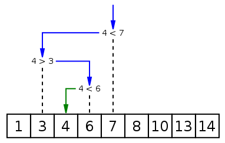

二分查找 （binary search），也称对数搜索 （logarithmic search），是在有序数组 中查找某特定元素的搜索算法，其时间复杂度为O(nlgn)。
搜索过程从数组中间元素开始 ，若中间元素是查找的元素 ，则搜索过程结束；
若特定元素大于或者小于中间元素 ，则在数组大于或小于中间元素的那一半中查找；
重复上述步骤，直至找到特定元素，或某一步骤数组为空 ，代表找不到。
应用场景：二分查找要求表中元素按关键字有序排列 。

一. 二叉搜索的实现 1. 基本的二分搜索 1 2 3 4 5 6 7 8 9 10 11 def binary_search (nums, target) : left, right = 0 , len(nums) - 1 while left <= right: mid = left + (right - left) // 2 if nums[mid] == target: return mid elif nums[mid] < target: left = mid + 1 else : right = mid - 1 return -1
主要思路 ：算法的搜索区间 为闭区间[left, right] ；若mid 不是目标时，需搜索[left, mid-1] 或[mid+1, right] ；因为mid已被搜索 过，应从搜索区间中除去 ；结束时left=right+1 ，left (left=len(nums)), right (right=0)都有可能越界。
2. 寻找左侧边界的二分搜索 例如，在有序数组nums=[2,2,2,3]中，搜索目标2 的左边界；若搜索1，算法会返回0；搜索4，算法返回4。所以算法可以理解为nums中小于目标的元素个数 。
1 2 3 4 5 6 7 8 9 10 11 12 13 14 def binary_search_left_border (nums, target) : left, right = 0 , len(nums) - 1 while left <= right: mid = left + (right-left) // 2 if nums[mid] == target: right = mid - 1 elif nums[mid] < target: left = mid + 1 else : right = mid - 1 if left >= len(nums) or nums[left] != target: return -1 else : return left
主要思路 ：基本同上，主要区别在于，找到目标时，不立即返回 ，而是缩小搜索区间 的上界right；while退出时，left=right+1，当目标比nums中所有元素都大（或小） 时，返回left=len(nums)（或0），所以在代码最后应有检测判断 。
3. 寻找右侧边界的二分搜索 1 2 3 4 5 6 7 8 9 10 11 12 13 14 def binary_search_right_border (nums, target) : left, right = 0 , len(nums) - 1 while left <= right: mid = left + (right-left) // 2 if nums[mid] == target: left = mid + 1 elif nums[mid] < target: left = mid + 1 else : right = mid - 1 if right < 0 or nums[right] != target: return -1 else : return right
主要思路 ：基本同上，主要区别在于，找到目标时，不立即返回 ，而是增大搜索区间 的下界left；while退出时，right=left-1，当目标比nums中所有元素都大（或小） 时，返回right=len(nums)-1（或-1），所以在代码最后应有检测判断 。例子：Leetcode 704. Binary Search ，Leetcode 34. Find First and Last Position of Element in Sorted Array 。
二. 二分搜索的应用 1. 旋转排序数组 搜索旋转排序数组，Leetcode 33. Search in Rotated Sorted Array
1 2 3 4 5 6 7 8 9 10 11 12 13 14 15 16 17 18 19 20 21 class Solution (object) : def search (self, nums, target) : left, right = 0 , len(nums) - 1 while left <= right: mid = left + (right - left) // 2 if nums[mid] == target: return mid if nums[mid] < nums[right]: if nums[mid] < target <= nums[right]: left = mid + 1 else : right = mid - 1 elif nums[mid] > nums[right]: if nums[left] <= target < nums[mid]: right = mid - 1 else : left = mid + 1 else : return -1 return -1
搜索旋转排序数组ii，包含重复元素，Leetcode 81. Search in Rotated Sorted Array II ，[参考]
1 2 3 4 5 6 7 8 9 10 11 12 13 14 15 16 17 18 19 20 21 22 23 24 class Solution (object) : def search (self, nums, target) : left, right = 0 , len(nums) - 1 while left <= right: mid = left + (right - left) // 2 if nums[mid] == target: return True if nums[mid] < nums[right]: if nums[mid] < target <= nums[right]: left = mid + 1 else : right = mid - 1 elif nums[mid] > nums[right]: if nums[left] <= target < nums[mid]: right = mid -1 else : left = mid + 1 else : if nums[right] == target: return True right -= 1
寻找旋转排序数组中的最小值，Leetcode 153. Find Minimum in Rotated Sorted Array ，[参考]
1 2 3 4 5 6 7 8 9 10 11 12 13 14 15 16 17 18 19 class Solution (object) : def findMin (self, nums) : if len(nums) == 1 or nums[0 ] < nums[-1 ]: return nums[0 ] left, right = 0 , len(nums) - 1 while left <= right: if left == right: break mid = left + (right - left) // 2 if nums[mid] < nums[right]: right = mid elif nums[mid] > nums[right]: left = mid + 1 else : pass return nums[left]
主要思路 ：旋转排序数组 的二分搜索，关键在于通过mid元素与队首、队尾元素的比较 ，确定mid元素的位置 （pivot点前，或后）；注意边界问题 。代码框架 如下：
1 2 3 4 5 6 7 8 9 10 11 12 13 14 15 16 def func (nums) : left, right = 0 , len(nums) - 1 while left <= right: (optional) if left == right: mid = left + (right - left) // 2 if nums[mid] < nums[right]: elif nums[mid] > nums[right]: else : right = right - 1
相似用例：Leetcode 154. Find Minimum in Rotated Sorted Array II ，[参考]
2. 其他 Leetcode 74. Search a 2D Matrix Leetcode 35. Search Insert Position
四. Reference Wiki: 二分查找 Blog: 二分查找详解 Blog: 二分搜索